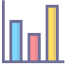

{% extends 'waste/index.html' %}
{% block extra_css %}
    <style>
        .dashboard .content {
            grid-area: content;
        }

        .chart-title {
            text-align: center;
            margin-top: 20px;
        }
    </style>
{% endblock %}
{% block extra_js %}
    <script type="text/javascript">
        let waste_storage = [
            {% for waste in waste_storage %}
                {
                    "waste_type": "{{ waste.wasteType|enum_to_string }}",
                    "maxCapacity": "{{ waste.maxCapacity }}",
                    "currentCapacity": "{{ waste.currentCapacity }}",
                },
            {% endfor %}
        ];
        let processing_capacity = [
            {% for processing in process_capacity %}
                {
                    "processing_type": "{{ processing.wasteType|enum_to_string }}",
                    "maxCapacity": "{{ processing.maxCapacity }}",
                    "currentCapacity": "{{ processing.currentCapacity }}",
                },
            {% endfor %}
        ];
        console.log(waste_storage);
        console.log(processing_capacity);

    </script>
    <script src="../../static/js/utils/chart.js"></script>
{% endblock %}
{% block title %}Capacity Dashboard{% endblock %}

{% block mainBody %}

    <section class="dashboard">
        <div class="chart-title"><h2>{{ _("Waste Storage") }}</h2></div>
        <canvas id="chart1" height="100px" style="box-shadow: 0.4px 0px 1.9px rgba(0, 0, 0, 0.06),
            0.9px 0px 4.3px rgba(0, 0, 0, 0.045),
            1.5px 0px 7.7px rgba(0, 0, 0, 0.038),
            2.5px 0px 12.8px rgba(0, 0, 0, 0.032),
            4.1px 0px 21.2px rgba(0, 0, 0, 0.028),
            7.6px 0px 37px rgba(0, 0, 0, 0.022),
            20px 0px 80px rgba(0, 0, 0, 0.015);
            padding: 10px;
            border-radius: 10px;"></canvas>
        <div class="chart-title"><h2>{{ _("Processing Capacity") }}</h2></div>
        <canvas id="chart2" width="400px" style="box-shadow: 0.4px 0px 1.9px rgba(0, 0, 0, 0.06),
            0.9px 0px 4.3px rgba(0, 0, 0, 0.045),
            1.5px 0px 7.7px rgba(0, 0, 0, 0.038),
            2.5px 0px 12.8px rgba(0, 0, 0, 0.032),
            4.1px 0px 21.2px rgba(0, 0, 0, 0.028),
            7.6px 0px 37px rgba(0, 0, 0, 0.022),
            20px 0px 80px rgba(0, 0, 0, 0.015);
            padding: 10px;
            border-radius: 10px;"></canvas>

        {% include "top.html" %}
        <div class="content">
            <div class="title-top">
                
                <h2>{{ _("Capacity Dashboard") }}</h2>
            </div>
        </div>
    </section>
    <script>
        $(document).ready(function () {

// Chart for Waste Storage
            const ctx1 = document.getElementById('chart1').getContext('2d');
            let data1 = {
                labels: waste_storage.map(data => data.waste_type),
                datasets: [{
                    label: 'Max Capacity',
                    data: waste_storage.map(data => data.maxCapacity),
                    backgroundColor: 'rgba(54, 162, 235, 0.7)',
                    borderColor: 'rgba(54, 162, 235, 1)',
                    borderWidth: 1
                }, {
                    label: 'Current Capacity',
                    data: waste_storage.map(data => data.currentCapacity),
                    backgroundColor: 'rgba(255, 206, 86, 0.7)',
                    borderColor: 'rgba(255, 206, 86, 1)',
                    borderWidth: 1
                }]
            }
            const chart1 = new Chart(ctx1, {
                type: 'bar',
                data: data1,
                options: {
                    scales: {
                        y: {
                            beginAtZero: true
                        }
                    },
                    plugins: {
                        tooltip: {
                            callbacks: {
                                label: function (context) {
                                    let label = context.dataset.label || '';
                                    if (label) {
                                        label += ': ';
                                    }
                                    label += context.raw;
                                    return label;
                                }
                            }
                        }
                    },
                    responsive: true,
                    animation: {
                        duration: 1000,
                        easing: 'easeOutQuart'
                    }
                }
            });
            let data2 =
                {
                    labels: processing_capacity.map(data => data.processing_type),
                    datasets: [{
                        label: 'Max Capacity',
                        data: processing_capacity.map(data => data.maxCapacity),
                        backgroundColor: 'rgba(75, 192, 192, 0.7)',
                        borderColor: 'rgba(75, 192, 192, 1)',
                        borderWidth: 1
                    }, {
                        label: 'Current Capacity',
                        data: processing_capacity.map(data => data.currentCapacity),
                        backgroundColor: 'rgba(153, 102, 255, 0.7)',
                        borderColor: 'rgba(153, 102, 255, 1)',
                        borderWidth: 1
                    }]
                }

            // Chart for Processing Capacity
            const ctx2 = document.getElementById('chart2').getContext('2d');
            const chart2 = new Chart(ctx2, {
                type: 'bar',
                data: data2,
                options: {
                    indexAxis: 'y',
                    scales: {
                        x: {
                            beginAtZero: true
                        }
                    },
                    plugins: {
                        tooltip: {
                            callbacks: {
                                label: function (context) {
                                    let label = context.dataset.label || '';
                                    if (label) {
                                        label += ': ';
                                    }
                                    label += context.raw;
                                    return label;
                                }
                            }
                        }
                    },
                    responsive: true,
                    animation: {
                        duration: 1000,
                        easing: 'easeOutQuart'
                    }
                }
            });
        });
    </script>
{% endblock %}